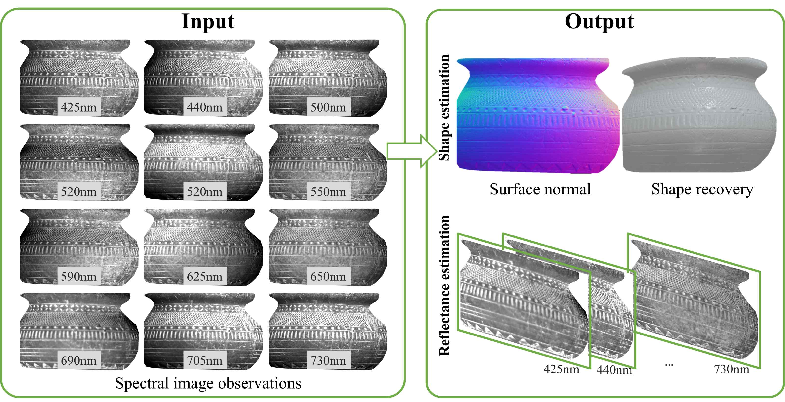
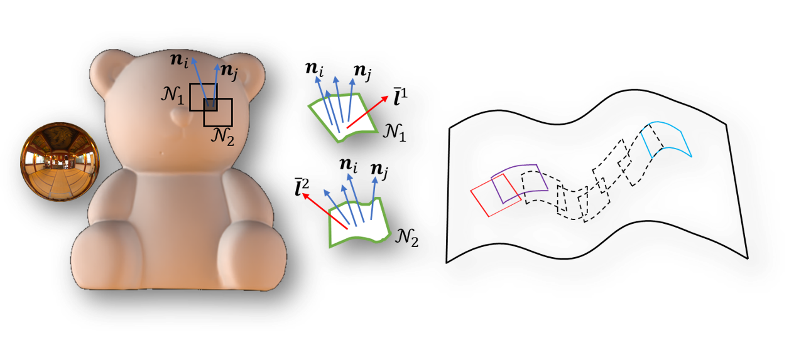
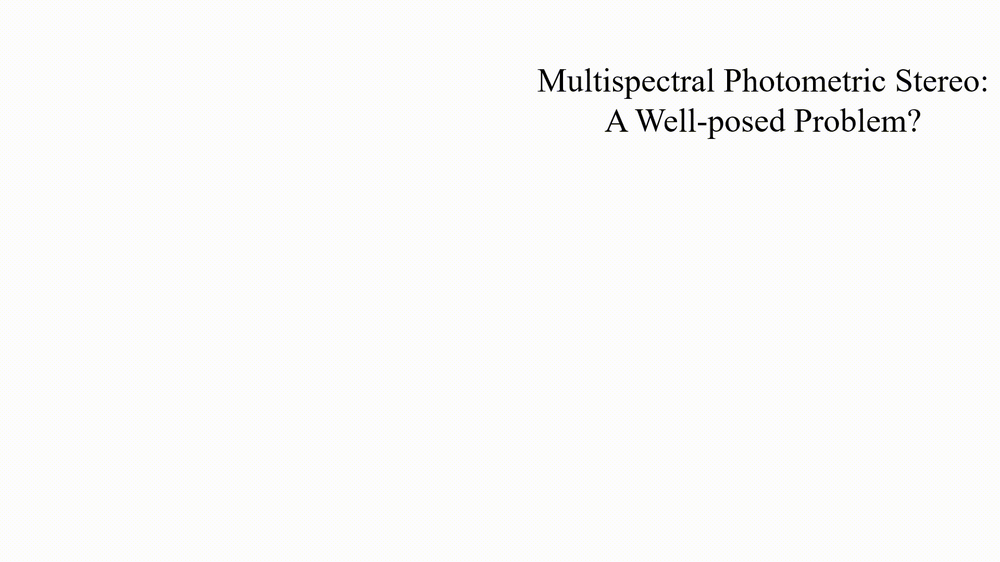
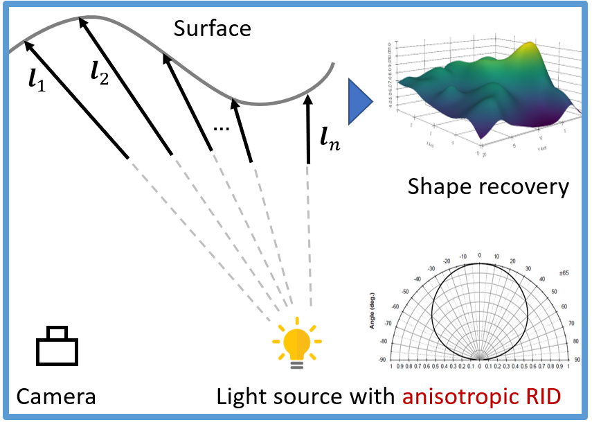
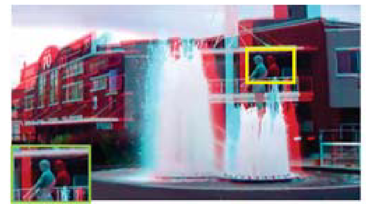
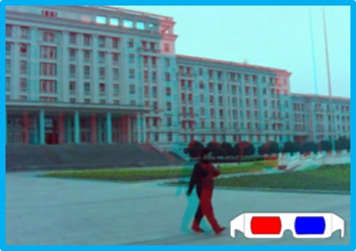
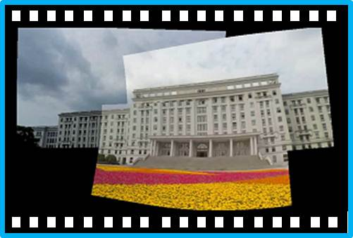

|
Heng Guo 郭亨 Specially Appointed Assistant Professor (特任助教) Matsushita lab Graduate School of Information Science and Technology Osaka University Email: heng.guo [at] osaka-u.ac.jp [GITHUB] [CV] [Google Scholar] |

|
About Me
I received my Ph.D. (Apr. 2019 - Mar. 2022) from Osaka University under the supervision of Prof. Yasuyuki Matsushita. Previously I obtained my Master and Bachelor degree in 2018 and 2015, both from University of Electronic Science and Technology of China (UESTC), under the supervision of Prof. Bing Zeng and Prof. Shuaicheng Liu.
My research interest includes computational photograpy and computer vision.
News
Publications

Edge-preserving Near-light Photometric Stereo with Neural Surfaces
Heng Guo, Hiroaki Santo, Boxin Shi, Yasuyuki Matsushita.
Pre-print
[Paper]

Multispectral Photometric Stereo for Spatially-Varying Spectral Reflectances
Heng Guo, Fumio Okura, Boxin Shi, Takuya Funatomi, Yasuhiro Mukaigawa, Yasuyuki Matsushita.
In International Journal of Computer Vision (IJCV 2022).
[Paper][Video]

Patch-based Uncalibrated Photometric Stereo under Natural Illumination
Heng Guo, Zhipeng Mo, Boxin Shi, Feng Lu, Sai-Kit Yeung, Ping Tan, Yasuyuki Matsushita.
In IEEE Transactions on Pattern Analysis and Machine Intelligence (TPAMI 2021).
[Paper]

Multispectral Photometric Stereo for Spatially-Varying Spectral Reflectances: A well posed probelm?
Heng Guo, Fumio Okura, Boxin Shi, Takuya Funatomi, Yasuhiro Mukaigawa, Yasuyuki Matsushita.
In IEEE Conference on Computer Vision and Pattern Recognition (CVPR 2021).
[Paper]
[Video]
[Slide]
[Poster]

Self-calibrating Near-light Photometric Stereo under Anisotropic Light Emission
Heng Guo, Boxin Shi, Michael Waechter, Yasuyuki Matsushita.
In Meeting on Image Recognition and Understanding (MIRU 2020). (Best Student Paper)

View-Consistent MeshFlow for Stereoscopic Video Stabilization
Heng Guo, Shuaicheng Liu, Shuyuan Zhu, Heng Tao Shen, Bing Zeng.
In IEEE Transactions on Computational Imaging (TCI 2018).
[Paper]
[Video]

Joint Bundled Camera Paths for StereoScopic Video Stabilization
Heng Guo, Shuaicheng Liu, Shuyuan Zhu, Bing Zeng
In International Conference on Image Processing (ICIP 2016) (Oral)
[Paper] [Website]

Joint Video Stitching and Stabilization from Moving Cameras
Heng Guo, Shuaicheng Liu, Tong He, Shuyuan Zhu, Bing Zeng, Moncef Gabbouj.
In IEEE Transactions on Image Processing (TIP 2016)
[Paper] [Website]